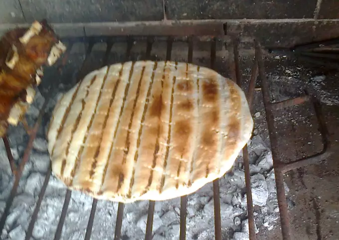

Esta es la receta de todos los dias, la que nos piden nuestros hijos o amigos cuando extrañan el sabor regional
INGREDIENTES
250 grs de harina comun.
50 grs grasa vacuna.
100 mm de agua natural.
1 cucharadita de sal (a gusto).
PASOS A SEGUIR
Poner la harina en un bowl, colocar en el centro la grasa derretida y tibia. Preparar una salmuera agregando la sal al agua, ir probando hasta que quede a gusto. Esta se debera agregar a la harina y mezclar, formando una masa. Amasar unos minutos hasta que este suave y lisa.
Estirar de 1 o 2 cm de espesor, pincharla con un tenedor. Cocinarla a la parrilla con poquitas brasas entre 15 minutos de cada lado, aproximadamente.

Podemos ver a continuacion un video explicativo de esta receta y la ubicacion de la region donde nacio